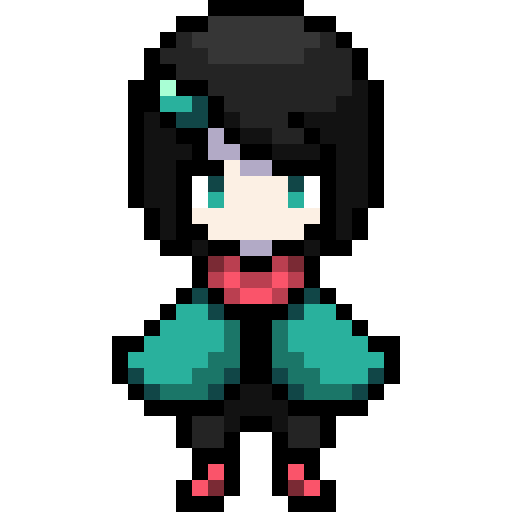
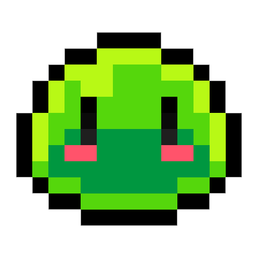

Заглибіться в таємничий світ підземелля, де живуть не тільки загадкові створіння, але й безліч загадок та небезпек. "Лона в підземеллі" - це захоплююча пригода, яка запрошує вас у захоплюючий квест разом із головною героїнею, хороброю Лоною, та її вірним супутником, улюбленцем, який іноді стає не тільки другом, але й ключем до вирішення складних завдань.
Вирушайте разом з Лоною у відповідь на виклик підземелля, де кожен крок може приховувати небезпеку чи непередбачену зустріч. Збирайте монети, щоб змусити серце Лони битися швидше, та оберігайтесь ворогів, які чатують на кожному кроці. У цій грі є три захоплюючі рівні, кожен з яких приховує свої виклики та загадки, готові випробувати вашу винахідливість та сміливість.
Протягом цієї захоплюючої подорожі ви зустрінете чудові розкішні місця підземелля, які зможуть забудований вражати своєю красою та загадковістю. Але пам'ятайте, що кожна ваша дія може вплинути на подальший розвиток подій, тож будьте обережні та уважні.
Це асинхронна гра для двох гравців. Гравці виконують свої ходи по черзі, витрачаючи кожен по п'ять дій. У цій неймовірній подорожі вони керують двома героями хороброю Лоною та в'ялим слизьком, які мають працювати в команді щоб пройти гру!
Керування персонажами:
 Лона: стрілочки (вгору, вниз, вліво, вправо), атака - клавіша F
Слизько: WASD